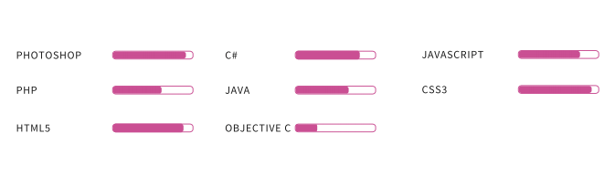

Quel personne suis-je?
Fille de 20 ans motivée et passionée par les nouvelles technologies, je suis à la recherche de challenges pour me développer personnellement et professionellement.
Mes stages et bénévola effectué.
IEV Rondy : Stage dans une entreprise d’import/export sur une application pour télécommande de scan et création d’une interface sous Phl de leur ERP.
Orange : Création d’un portail web, regroupant les applications les plus utilisés pour le pôle support de l’entreprise.
Resto bébé du coeur, bévole à Grenoble : Faire partie de cette association m’apermis d’acquérir des compétences dans le domaine du relationnel.
Institue de Biologie Structural : Une découverte dans l’univers d’une grande entreprise, avec ses avantages et contraintes.
Mon parcours scolaire.
Licence Pro SMIN
Actuellement en formation en License Pro Service Mobile et Interface Nomade(SMIN) pour améliorer mes compétences dans le dèveloppement d’applications et site web mobile.
Brevet de Technicien Supérieur SIO
Diplomée d'un BTS de Services Informatiques aux Organisations, j'ai pu y acquérir et développer mes compétences informatiques.
Baccalauréat S
Diplomée d'un Baccalauréat Scientifique, option Science et Vie de la Terre et spécialité Physique Chimie.
Mes compétences acquises au cours de mes années d'études
